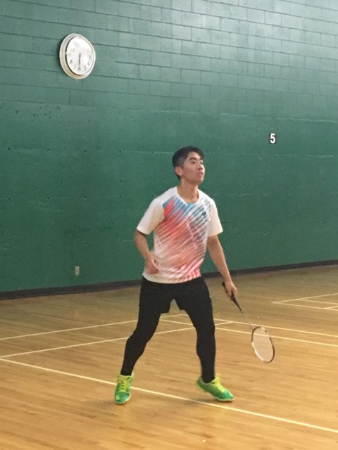

J A M E S C H E N
E X T R A C U R R I C U L A R S
Badminton
I started playing badminton recreationally when I was young, but only began taking it seriously and training/competing two years ago. I have played in both district and provincial level tournaments, and have even medalled in provincial tournaments. I also coached during the summer before university. Badminton has helped me to develop many of my skills, including work-ethic, perserverance, and leadership skills. It has also given me the opportunity to make new friends, and gave me some of my fondest memories.

james.chen2@uwaterloo.ca
613-600-9672
Work-in-progress. Copyright © James Chen 2019